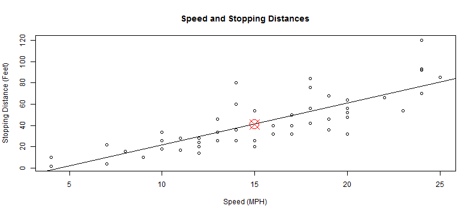

When driving, it is important to know how much distance you need to safely stop a car. I've built a simple online tool you can use to estimate how much space you need based on the speed the car is moving.
Matt Frei
When driving, it is important to know how much distance you need to safely stop a car. I've built a simple online tool you can use to estimate how much space you need based on the speed the car is moving.
The online tools uses a simple linear prediction model shown here. The user inputs a speed and the model estimates the required stopping distance.
Speed = 15 MPH
Prediction = 41

Note that this analysis is based on data recoded in the 1920s. Also, many other factors, not available in this data set likely affect stopping distance (e.g. vehicle weight).